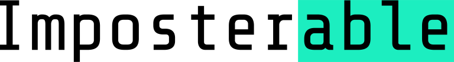

<mat-toolbar>
    
    <button mat-button routerLink="/cheatsheets" routerLinkActive="active">Cheatsheets</button>
    <button mat-button routerLink="/biographies" routerLinkActive="active">Biographies</button>
</mat-toolbar>